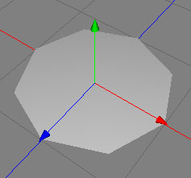

The disc is a parametric polygonobject which gives you a flat disc object with n corners which you can modify in a number of different ways. It's basic form appears as below.

Properties
Corners: Specifies the number of corners the disc will have. Defaults to 8.
Sections Radius: Specifies the number of sections the radius (centre-outwards) will be split into. Defaults to 3.
Radius: Specifies the radius of the disc. Defaults to 1.